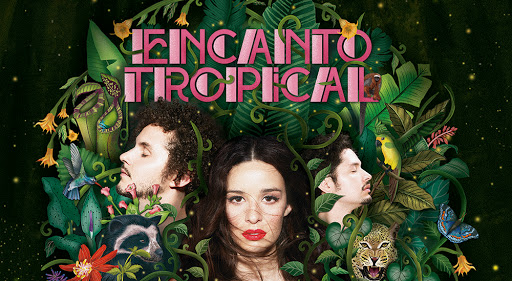

Monsieur Periné es un grupo musical originario de Bogotá, Colombia. Su propuesta fusiona el pop, folk y el jazz. Liderado por Catalina Garcia, una cantante multilingüe (español, francés, inglés, portugués), y el multiinstrumentista Santiago Prieto. La agrupación, ganadora del Latin Grammy como “Mejor Nuevo Artista” en 2015, es en la actualidad una de las bandas Latinoamericanas de mayor crecimiento y proyección internacional.
Catalina García es originaria de Cali, Colombia y estudió en el liceo francés Paul Valery de la misma ciudad. Más tarde, estudiando comunicación y sin terminar su primer semestre, se trasladó con su padre a Estados Unidos donde permaneció dos años, tras los cuales regresó a Colombia. Teniendo 18 años decidió dejar su hogar y estudiar antropología en la Universidad Javeriana, en Bogotá.
Los principales integrantes de la banda tocaron juntos por primera vez en la Semana Santa de 2007, en Villa de Leyva, un pueblo próximo a Bogotá, Colombia. Luego, Catalina, Santiago, Nicolás, y Camilo Parra (quién más tarde dejaría la banda) empezaron a reunirse con frecuencia para tocar canciones de varios géneros musicales latinoamericanos y jazz, hecho que los impulsó a desarrollar la búsqueda de una identidad. En 2009 y 2010 realizaron presentaciones locales en Bogotá. Participaron del Festival Blues D.C 2009, el Festival de Jazz del Teatro Libre y el Festival Iberoamericano de Teatro y el Festival de Jazz Libélula Dorada. Fue en el 2009 cuando los galardonaron con un Premio Jóvenes Talentosos de la Música (2009) de la Alianza Francesa y otro en el concurso Urock Universia (2010).